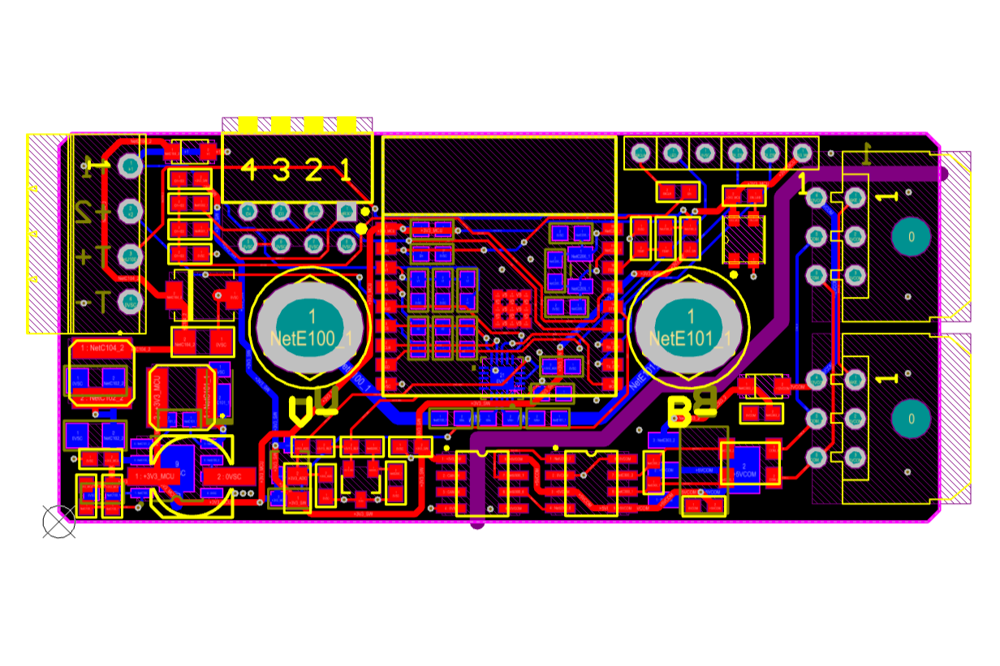
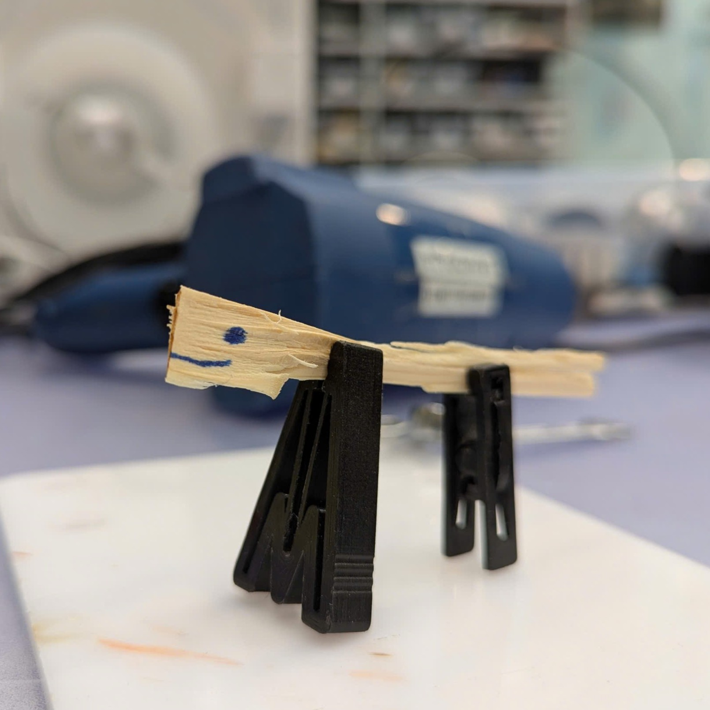

Low-Power BLE Battery Monitor
Developed a low-power battery current monitoring system using an ESP32, precision ADC, and custom analogue measurement circuitry.
I'm a Master's student in Automation and Electrical Engineering at Aalto University, majoring in Electronic and Digital Systems.
I'm a bit of a jack of all trades. I enjoy getting my hands dirty, tinkering with things, and turning ideas into something tangible.
So far, I've dabbled in everything from embedded electronics and PCB design to 3D reconstruction and mechanical prototyping. I'm always keen to try something new, even if it means figuring things out along the way.

A little dinosaur I made out of scraps while working on something else.

Developed a low-power battery current monitoring system using an ESP32, precision ADC, and custom analogue measurement circuitry.

Developed a Python-based pipeline to turn freehand 2D ultrasound images into 3D models and physical phantom prototypes.

Designed the enclosure and mechanical components for a wearable audio recording device, using CAD and rapid prototyping.
Email: lenguyenhavy4466@gmail.com@gmail.com
LinkedIn: linkedin.com/in/nguyenle1004
Mobile Phone: +358 46 9601796